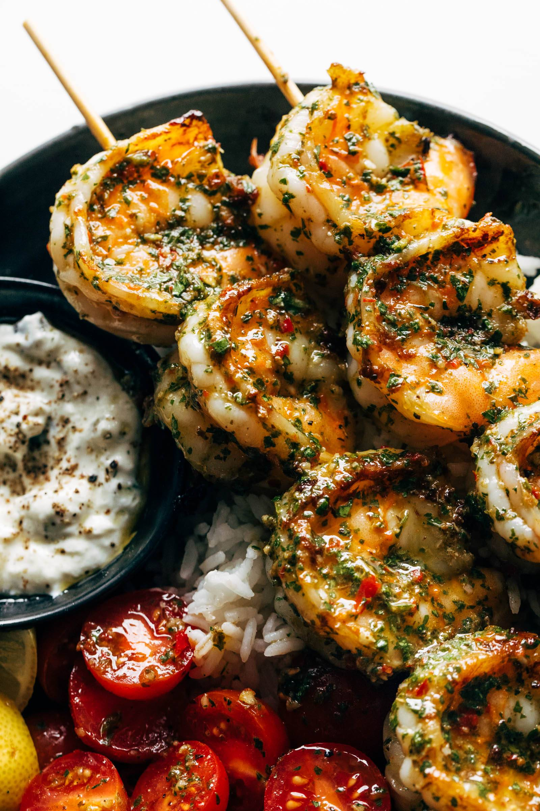

Chimmichurri Shrimp

Description
This chimichurri shrimp uses chimmichurri sauce made from scratch, and is a fresh take
on ingredients you may have lying around the house. Enjoy!
ingredients
Chimichurri Sauce
- 1/2 cup finely chopped fresh parsley
- 5 gloves garlic, finely chopped
- 1/2 shallot, finely chopped
- 2 tablespoons finely chopped fresh oregano
- 2 tabelspoons red pepper flakes
- 1/2 cup olive oil
- 3 tablespoons red wine vinegar
- 1 teaspoon salt
- 1 teaspoon frehsly ground black or white pepper
Shrimp
- 1 pound large shrimp, pelled and devined
- 3 tablespoons olive oil
- 1 tablespoon honey
- 1 tablespoon garlic powder
- 2 teaspoons smoke paprika
- 1 teaspoon salt
- 1 teaspoon frehsly ground black pepper
Home
Steps
- Add parsley, garlic, shallot, oregano, red pepper, olive oil, vinegar, salt, and pepper to a bowl;
stir well to combine. Sit for at least 30 minutes and up to 60
- Combine olive oil, honey, garlic powder, smoked paprika, salt, and pepper in a large bowl.
Mix well and add the shrimp in and mix, making sure the shrimp is fully covered. Cover
the bowl and marinate in the fridge for 30 minutes
- Heat a griddle or cast iron skillet over medium-high heat. Once hot, add shrimp
and cook for 3 minutues on each side.
- Put cooked shrimp in a blow, spooning chimichurri sauce on top and tossing to coat
the shrimp.